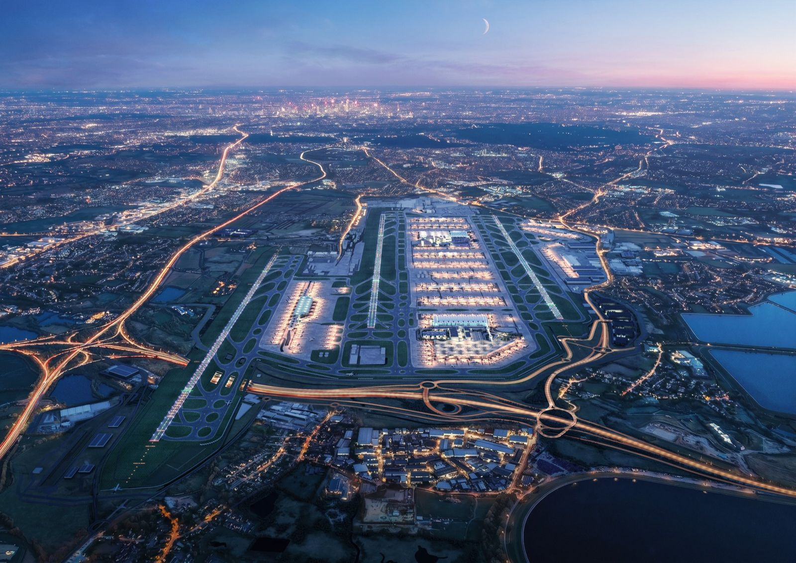

Systematic Inclusion: Accessible Design as a Foundation for Safe and Sustainable Buildings
A public seminar by Jenny McLaughlin — Principal Project Manager, Heathrow Airport Expansion
About the Talk
What does a healthy building look like if it doesn't work for everyone? Jenny McLaughlin has spent 18 years at Heathrow Airport — one of the world's most complex built environments — and her answer is clear: accessibility isn't an add-on. It's a precondition.
In this seminar, Jenny will introduce Systematic Inclusion — her framework for embedding accessible, equitable design into infrastructure from the ground up, not as a compliance exercise but as a driver of safety and sustainability. Drawing on her work as a co-author of the RIBA Inclusive Design Overlay (2023) and the launch of the Equitable Safety Initiative (2025), she will show what happens when inclusion is treated as a systemic challenge rather than an individual accommodation.
Jenny will also speak candidly about her own experience as a dyslexic professional with ADHD — and why neurodiversity, far from being a barrier, is an asset in designing for the full range of human experience.
This seminar will be of interest to colleagues across architecture, engineering, public health, policy, and practice — and to anyone whose research asks what it means to build environments that are genuinely healthy for everyone who uses them.
The talk will cover
Systematic Inclusion in practice — at the scale of a major infrastructure programme
RIBA Inclusive Design Overlay — what it is and why it matters for research and practice
Equitable Safety Initiative — reframing building safety as an equity issue
Neurodiversity as an asset — what different thinking brings to the built environment
About Jenny McLaughlin
Jenny McLaughlin has worked in the airport industry for over 20 years — starting at East Midlands Airport and spending the last 18 years at Heathrow across Environment, Airside, and now Infrastructure, where she is a Principal Project Manager on the Expansion programme.
Jenny has delivered a wide range of business changes, from new IT applications to infrastructure projects including taxiway rehabilitation, fire training facilities, and the new Virtual Contingency Facility.
She is a co-author of the RIBA Inclusive Design Overlay (published 2023) and a key figure in the launch of the Equitable Safety Initiative (2025). She speaks regularly at industry events on Systematic Inclusion and the role of accessibility in keeping the built environment safe and sustainable.
Jenny is a Governor for Harrow Richmond and Uxbridge College and leads the Heathrow Inclusive Learners Partnership, creating equitable pathways for learners into the industry. She is dyslexic and has ADHD — and believes that "the way that my brain is wired differently is an asset."
Register to Attend
Free and open to all. Registration details will be confirmed with the event date.
Get in touch to be notified →